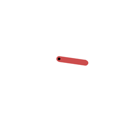
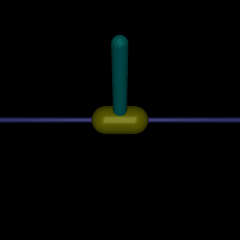
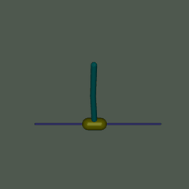
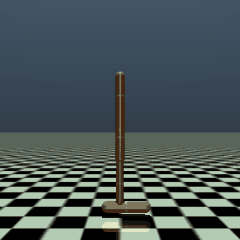
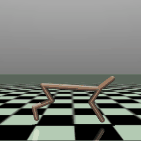
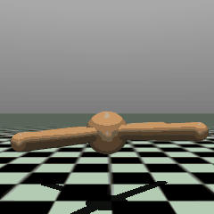
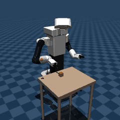
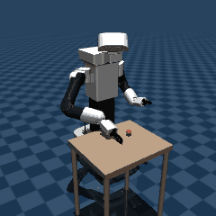

A reward learned from the direction of expert demonstrations
RoboticsLab, Universidad Carlos III de Madrid
Most inverse reinforcement learning (IRL) methods reduce expert demonstrations to a scalar reward and discard the directed geometric structure of the trajectories. We propose Quasimetric Asymmetry for Inverse Reinforcement Learning (QA-IRL), which learns an asymmetric state-space distance from the temporal ordering of expert demonstrations and derives a transition reward from its asymmetry. The reward favors expert-aligned behavior and needs no reward labels, goal annotations, or trajectory rankings. The distance is represented by a max-ReLU quasimetric architecture that satisfies non-negativity and the triangle inequality by construction. Training combines a budget-constrained push-apart objective, contrastive learning against policy-visited states, and directional supervision, so that the reward and the policy are learned jointly without a separate pretraining stage.
We prove that the ideal push-apart objective identifies the expert-graph distance on observed temporal pairs and that the architecture can represent this distance exactly. Under uniform transition costs and δ-optimal demonstrations, this distance approximates the optimal goal-reaching cost within δ. On six continuous-control benchmarks, QA-IRL is competitive with established IRL and imitation-learning methods. Ablation studies show that the quasimetric structure and directional supervision both matter, and that effective reward learning does not require exact geometric recovery. In robotic manipulation with TIAGo++, QA-IRL exceeds 80% success on both simulated tasks and on the physical robot, without additional training.
These results support quasimetric asymmetry as a geometric basis for reward learning and for its use in real-world robotic manipulation.
The distance is a max-ReLU quasimetric on a learned embedding φ(s) of size K × M. It is non-negative, d(s, s) = 0 and it satisfies the triangle inequality by construction. The reward is its asymmetry, clipped to [−R, R]:
Pushes expert temporal pairs (st, st+k) apart, under a budget c0 on consecutive expert transitions that a Lagrange multiplier enforces.
Contrasts expert pairs against states the policy visited, with a weight that decays to 0 during training.
Asks for a reward of at least m on every consecutive expert transition.
The policy is trained with SAC on the learned reward, and the replay buffer recomputes the reward with the current quasimetric on every sampled minibatch.








Policies acting deterministically on the reward they learned. On the Gymnasium tasks each GIF shows the first 4 seconds of the evaluation episode. On the Fetch tasks it shows a full episode with the checkpoints deployed on the physical TIAGo++. All of them are on Hugging Face.
The policies trained in simulation run on the physical robot without additional training.
Final return, mean and standard deviation over 5 seeds (final policy, 10 deterministic episodes per seed). Best method per task in bold.
| Environment | QA-IRL | TEXB-IRL | AIRL | GCL | T-REX | TW-CRL | GAIL | BC | Expert |
|---|---|---|---|---|---|---|---|---|---|
| Pendulum | −127 ±7 | −331 ±359 | −270 ±289 | −323 ±416 | −120 ±1 | −188 ±76 | −368 ±527 | −267 ±108 | −257 |
| InvertedPendulum | 1000 ±0 | 1000 ±0 | 638 ±497 | 800 ±446 | 9 ±9 | 1000 ±0 | 1000 ±0 | 1000 ±0 | 1000 |
| InvertedDoublePendulum | 9342 ±2 | 9357 ±2 | 7489 ±4172 | 7488 ±4174 | 98 ±21 | 4754 ±4329 | 8804 ±1233 | 9356 ±1 | 9353 |
| Hopper | 3424 ±506 | 1616 ±252 | 805 ±355 | 1113 ±1523 | 35 ±17 | 2467 ±477 | 2072 ±962 | 2121 ±1346 | 3858 |
| HalfCheetah | 9373 ±893 | 7952 ±5372 | −97 ±84 | 600 ±589 | 6943 ±2272 | 3267 ±2753 | 10189 ±915 | 7685 ±4519 | 16243 |
| Ant | 2572 ±2237 | 5417 ±512 | −16 ±5 | −6 ±4 | −7 ±2 | 168 ±188 | 68 ±108 | 6386 ±439 | 6673 |
Mean and standard deviation over 3 seeds, 50 held-out episodes per seed. The expert is the scripted demonstrator.
| Task | Metric | QA-IRL | TEXB-IRL | BC | Expert |
|---|---|---|---|---|---|
| Pick | Success (%) | 81 ±17 | 89 ±8 | 37 ±24 | 100 |
| Return | −35 ±6 | −48 ±5 | −80 ±17 | −51 | |
| Push | Success (%) | 83 ±8 | 45 ±8 | 34.7 ±4.6 | 96 |
| Return | −33 ±6 | −67 ±7 | −79 ±1 | −36 |
Success of the policies selected for deployment: on independent simulated episodes, on simulated episodes with the initial conditions of the physical trials, and on the physical TIAGo++.
| Task | Simulation, held-out | Simulation, matched | Physical robot |
|---|---|---|---|
| Pick | 100/100 | 9/10 | 8/10 |
| Push | 77/100 | 6/10 | 9/10 |
The paper also reports the ablations, the temporal and geometric analysis and the synthetic experiments.
The code repository has the implementation, the settings of every environment and one script per experiment of the paper. Trained policies are on Hugging Face, and the demonstrations that are not on Minari are in the qa-irl-data dataset. The TIAGo++ Fetch tasks are a separate package, tiago-fetch-envs.
# install, get the demonstrations, train and evaluate
pip install "qairl[data,fetch] @ git+https://github.com/FranJNaranjo/qa-irl.git"
python -m qairl.data --env hopper
python -m qairl.train --env hopper --seed 0
python -m qairl.evaluate --run runs/hopper/s0
The BibTeX entry will be added with the preprint.